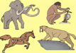
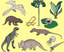

| Кайназойская эра, около 70 млн лет |
Антропогеновый 2 млн лет |
 |
Общие поднятия территории, оледенения, появление человека |
Торф, золото, алмазы, драг. камни |
| Неогеновый 25 млн лет |
Возникновение новых гор в области кайнозойской складчастости, возрождение гор в области всех древних складчастей |
Бурый уголь, нефть, янтарь |
| Палеогеновый 41 млн лет |
Разрушение мезозойских гор, широкое распространение цветковых растений, развитие птиц |
Бурый уголь, фосфориты, бакситы |
| Мезозойская эра, около 165 млн лет |
Меловой 66 млн лет |
 |
Возникновение новых гор, сухой климат, возникновение гигантских растений, развитие птиц и млекопитающих |
Нефть, уголь, фосфориты, мел |
| Юрский 53 млн лет |
Образование современных океанов, жаркий, влажный климат, расцвет рептилий, господство голосеменных растений, появление примитивных
птиц |
Каменный уголь, нефть, фосфориты |
| Триасовый 50 млн лет |
Наибольшая за всю историю Земли сокращение океанов и поднятие суши, пустыни, появление первых млекопитающих |
Каменная соль |